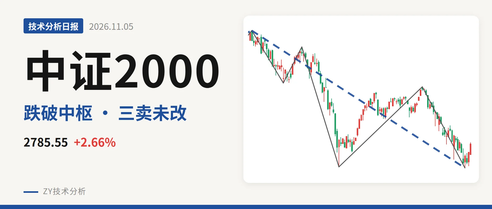
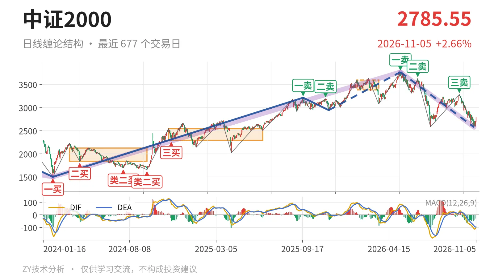
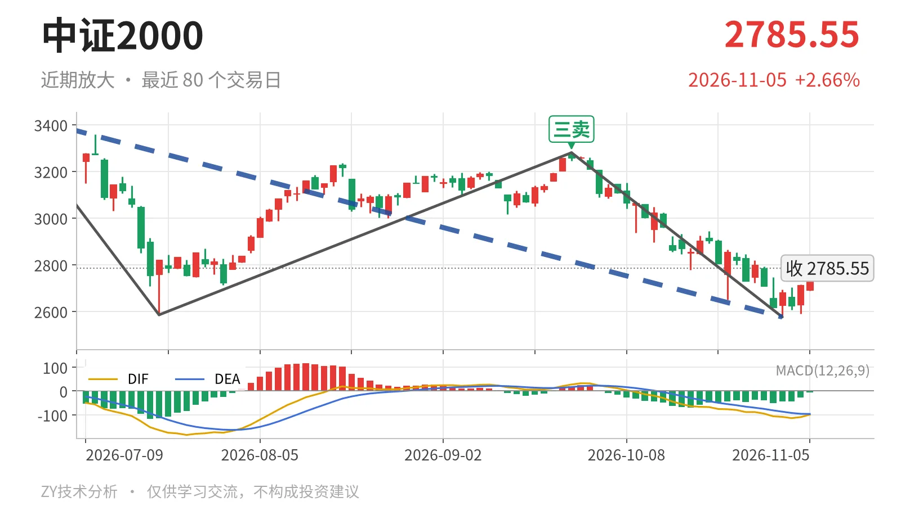

中证2000｜三卖压3280 反弹未成笔

最近日线中枢 3381.36—3593.19点，收盘位于中枢之下
一句话：反弹未成笔，价格低于最近中枢，下跌段未改。
📉 走势结构：日线下跌段还在延续
当前仍处于2026年5月14日以来的日线下跌段中，最新三根K线的反抽尚未成笔。更大级别上，2024年2月6日至2026年5月14日的上涨段从1503.44点走到3768.08点，涨约150.6%，仍处于延续状态；2026年5月14日以来的下跌段由3768.08点跌至2576.02点，跌约31.6%，也还在延续。日线线段层面，2025年11月21日至2026年5月14日的上涨段与2026年5月14日以来的下跌段同处未结束状态，价格由后者主导。11月3日至11月5日三根K线最高2798.18点、最低2590.63点，收盘2785.55点，未形成日线笔，反弹只是雏形。

🧭 中枢与位置：跌破最近中枢，中枢上移后失守
最新收盘2785.55点位于最近日线笔中枢3381.36—3593.19点下方，低于下沿约17.6%。该中枢由1月26日至3月23日的日线笔构成，中轴3487.28点，还未结束；再往前看，2024年11月12日至2025年6月23日的中枢在2293.12—2547.90点，中枢整体是上移的。但5月14日以来的下跌段把价格重新打回新中枢下方，说明这次回落不是中枢内震荡，而是跌破了上移后的中枢。
🎯 买卖点：日线卖点一个比一个低
日线笔级别卖点从5月14日至9月22日一个比一个低，下跌结构没有破坏。5月14日一卖3768.08点、6月23日二卖3626.48点、9月22日三卖3280.29点，依次降低。2025年9月18日一卖3213.83点和2025年11月14日二卖3189.72点，因之后在2026年5月14日创出3768.08点新高，只对应较小级别。线段级别上，2025年11月21日的二三买重合2944.56点已经失守，11月2日的类二买2576.02点所在下跌段还在延续，属于暂定的类二买，会随该线段延续而变化。当前收盘2785.55点仍低于9月22日三卖3280.29点，三卖后的回落段未被反向笔破坏。

⚖️ 背驰：新低但DIF低点抬高，绿柱未收缩
最近两段同向下跌笔之间，价格新低但未出现标准背驰。6月23日至7月21日的下跌笔低点2585.35点，绿柱面积810，DIF低点-164.2；9月22日至11月2日的下跌笔低点2576.02点，绿柱面积873，DIF低点-108.5。价格创出新低，DIF低点由-164.2抬升至-108.5，但绿柱面积反而由810放大到873，属于“新低、DIF低点抬高、绿柱面积未缩小”的组合，不是标准的新低不新弱。最新DIF-99.1仍在零轴之下，说明下跌力度只是局部收敛。
🔎 关键位置观察：3280点与3381点决定反弹性质
当前仍由5月14日以来的下跌段主导，反抽能否站上3280点和3381点决定下跌是延续还是转为中枢扩展。先看9月22日三卖高点3280.29点附近，若反抽回不到3280点上方，三卖后的回落结构不会改变；只有重新站上最近日线笔中枢下沿3381点一线，这次下跌才更可能只是中枢扩展。下方先看11月2日低点2576.02点和最新三根K线低点2590.63点一线，若后续回落不破2576点，则暂定的类二买仍有延续空间；若跌破2576点且绿柱面积继续放大，则下跌段延续。当前价格低于最近中枢下沿、DIF仍在零轴下方，反弹未成笔，下跌结构未见改变。
⚠️ 本文为基于公开行情数据的缠论技术结构记录，由程序自动计算并生成，仅供学习交流，不构成任何投资建议。市场有风险，投资需谨慎。